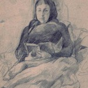

Prisoner: Lev Kopelev
“Led one night to be interrogated, I noticed a bookcase against the wall just before we came to a sharp turn of the dimly lit corridor. On the way back to my cell, with my sleepy guard walking behind me, I put on speed just before turning the corner and, without stopping, scooped up as many books as I could, hiding them under my overcoat. I could read during the day. They had not gotten around to making a peephole in the door of our cell, and by the time the guard would turn the key in the lock and slide open the bolt, I would have the book I was reading buried in straw, where the other books were hidden."

Portrait of Anna Skitmazur
Mental Diversions
Their bodily senses constantly assaulted, many prisoners turned to mental diversion to survive. Religious ritual, music, art, checkers, cards, chess and literature allowed prisoners to displace the hunger, cold and torment for a few moments at a time. Each of these activities required remarkable ingenuity in the conditions of the labor camp, where playing cards or art materials had to be fashioned from whatever could be found and hidden during the frequent searches of barracks and worksites.
The prisoner intelligentsia—the small portion of the Gulag population that left most of the Gulag memoirs—write frequently of the importance of literature and especially poetry for their mental survival. Nina Gagen-Torn recounted how she recited poetry for her cellmates, and they absorbed it "like dry ground taking in water. Even those who never thought about poetry or rhythm when free began to absorb and recite poems….Blok and Pushkin, Nekrasov, Mandelshtam…Their faces brightened."
For Aleksandr Solzhenitsyn, writing in captivity was key. "This was very rewarding, in that it helped me not to notice what was being done with my body. Sometimes in a sullen work party with Tommy-gunners barking about me, lines and images crowded in so urgently that I felt myself borne through the air, overleaping the column in my hurry to reach the work site and find a corner to write. At such moments I was both free and happy." Of course, in camp conditions, Solzhenitsyn taught himself to "write" by committing his work to memory, so Gulag authorities would be unable to seize it from him.